Building upon the Nori renderer from ETH Zurich's Computer Graphics course (FS2025), this here represents my exploration into advanced rendering techniques. Here I document the features I implemented beyond the course requirements, along with my notes and validations.
# Emitters
## Spot Light
Spotlights emit light in a cone of directions from their position. This is discussed in [chapter 12.2.1 of the PBR book](https://www.pbr-book.org/4ed/Light_Sources/Point_Lights#Spotlights).
### Description
**Files created or modified**:
- `src/spotlight.cpp`
**Validation scenes**:
- `scenes/nori-beyond/spotlight/cbox.xml`
- `scenes/nori-beyond/spotlight/cbox_mitsuba.xml`
A new emitter type `SpotLight` is implemented in the file `spotlight.cpp`.
The origin of the light is at $(0, 0, 0)$, and points towards the $+z$ axis. A spot light is defined by two angles -- `falloffStart`, where everything inside this angle is fully illuminated (intensity multiplier = 1), and `totalWidth`, where illumination fades to black at this angle, and everything outside is dark (intensity multiplier = 0). To avoid expensive $\arccos$ operations, I store the the cosines of the angles `cosFalloffStart` and `cosTotalWidth`, and since $\cos \theta$ decreases as $\theta$ increases, $\cos \theta_\text{fall off start} > \cos \theta_\text{total width}$. To create a soft transition zone (penumbra) in the outer cone, I use the `SmoothStep` function, which is a cubic function (Hermite interpolation), that takes in $\cos \theta_\omega, \cos \theta_\text{total width}, \cos \theta_\text{fall off start}$, where $\cos \theta_\omega$ is the cosine angle between $+z$ and the vector with direction $\mathbf{\omega}$ pointing from the light origin to the point in scene:
1. Compute $t = \frac{\cos \theta_\omega - \cos \theta_\text{total width}}{\cos \theta_\text{fall off start} - \cos \theta_\text{total width}}$ and $t = 0$ if $\cos \theta_\omega < \cos \theta_\text{total width}$ or $\cos \theta_\omega > \cos \theta_\text{fall off start}$.
2. Return $t^2(3 - 2t)$ (Hermite interpolation)
The angular intensity $I(\mathbf{\omega})$ is the radiant intensity in the direction $\mathbf{\omega}$ (power emitted per solid angle in direction $\mathbf{\omega}$), and is given by
$$
I(\mathbf{\omega}) = \underbrace{\text{scale} \times \text{spectrum}}_\text{Peak intensity in the forward direction before angular attenuation} \times \underbrace{\text{SmoothStep}(\cos \theta_\omega, \cos \theta_\text{total width}, \cos \theta_\text{fall off start})}_\text{Scalar in $[0, 1]$ depending on $\theta_\omega$}
$$
A surface patch $\mathrm{d}A$ at point $\mathbf{p}$ subtends a small solid angle $\mathrm{d}\mathbf{\omega}$ around direction $\mathbf{\omega}$, with the relation $\mathrm{d}\mathbf{\omega} = \frac{\cos \theta}{r^2}\mathrm{d}A$, where $\theta$ is the angle between the surface normal at $\mathbf{p}$ and direction from $\mathbf{p}$ to the light. The power arriving at $\mathrm{d}A$ from that infinitesimal solid angle is given by
$$
\mathrm{d}\Phi = I(\mathbf{\omega})\mathrm{d}\mathbf{\omega} = I(\mathbf{\omega})\frac{\cos \theta}{r^2}\mathrm{d}A
$$
The irradiance on the patch is $E = \frac{\mathrm{d}\Phi}{\mathrm{d}A} = \frac{I(\mathbf{\omega})\cos \theta}{r^2}$. The radiance $L$ is defined so that
$$
\begin{align*}
\mathrm{d}\Phi &= L \cos \theta \mathrm{d}A\mathrm{d}\mathbf{\omega} \\
L &= \frac{\mathrm{d}\Phi}{\cos \theta \mathrm{d}A\mathrm{d}\mathbf{\omega}} \\
&= \frac{I(\mathbf{\omega})\mathrm{d}\mathbf{\omega}}{\cos \theta \mathrm{d}A\mathrm{d}\mathbf{\omega}} \\
&= \frac{I(\mathbf{\omega})}{r^2}
\end{align*}
$$
Derivation of flux (not used explicitly in this implementation because of the uniform sampling strategy)
A spherical cap (cone of half-angle $\theta$) has solid angle $\Omega(\theta) = 2\pi(1 - \cos \theta)$. Within the region of `falloffStart`, intensity is constant, so flux in that region is
$$
\Phi_\text{fall off start} = I_\text{fall off start}\Omega(\theta_\text{fall off start}) = 2\pi I_\text{fall off start}(1 - \cos \theta_\text{fall off start})
$$
Between `falloffStart` and `totalWidth`, the intensity decreases smoothly to 0. The PBR book approximates the integral by assuming that intensity in the region averages to half the peak value. The solid angle of the penumbra annulus is $\Omega_\text{penumbra} = 2\pi(\cos \theta_\text{fall off start} - \cos \theta_\text{total width})$. If the average intensity is $I_\text{fall off start} / 2$, then
$$
\Phi_\text{penumbra} \approx \frac{I_\text{fall off start}}{2}\Omega_\text{penumbra} = = 2\pi I_\text{fall off start}\frac{\cos \theta_\text{fall off start} - \cos \theta_\text{total width}}{2}
$$
Total flux is thus
$$
\Phi \approx \Phi_\text{fall off start} + \Phi_\text{penumbra} = 2\pi I_\text{fall off start}\left[(1 - \cos \theta_\text{fall off start}) + \frac{\cos \theta_\text{fall off start} - \cos \theta_\text{total width}}{2}\right]
$$
#### `SpotLight::eval(...)`
Delta emitters have zero area so there is measure-zero probability of hitting them via BSDF sampling.
#### `SpotLight::sample(...)`
First assign the fields of the emitter query record `lRec` given the position of the light and the reference point $\mathbf{p}$. Then compute the angle attenuation term using $\text{SmoothStep}$ given the cosine of the angle between the `m_direction` (direction of spot light) and the vector pointing from the light to $\mathbf{p}$ (`lRec.ref`). Finally compute the intensity and return the radiance.
#### `SpotLight::pdf(...)`
Delta lights have zero measure, thus PDF = 0. This is required for MIS.
#### `Spotlight::samplePhoton(...)`
First sample a direction from the light using `squareToUniformSphereCap` and assign the sampled direction to `ray`. Then compute the angle attenuation term using $\text{SmoothStep}$ given the cosine of the angle between the `m_direction` (direction of spot light) and the sampled direction. Finally return the photon power, which is the intensity divided by the sampling PDF.
### Validation
I compared my implementation with Mitsuba with the Cornell box scene with two cubes, and a spot light positioned behind the right one, pointing towards the left one.
I also updated `path_mis.cpp` to support delta lights (spotlights and point lights) by modifying the MIS weight calculation. For delta lights (detected by checking if `ems_lRec.n.isZero()`), I set the MIS weight to 1.0 since delta lights cannot be sampled by BSDF sampling (the probability of randomly hitting a point light via BSDF is zero). This ensures that only emitter sampling contributes when rendering scenes with delta lights, preventing the image from being incorrectly darkened by MIS weighting.
**Comparison: Cornell Box with Spot Light**
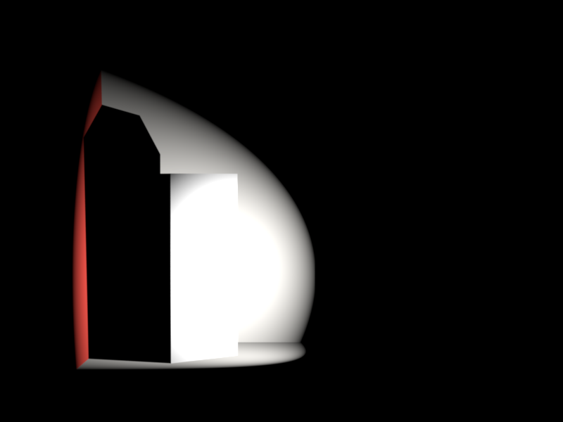
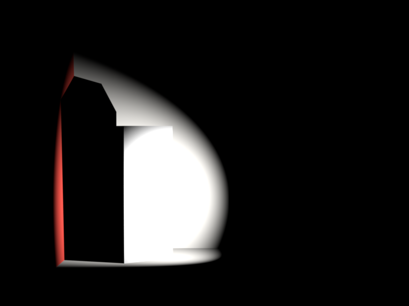
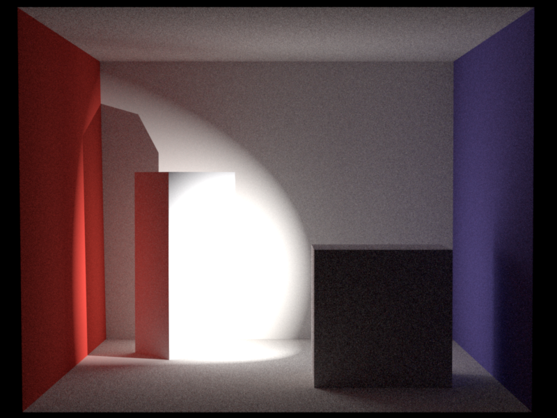
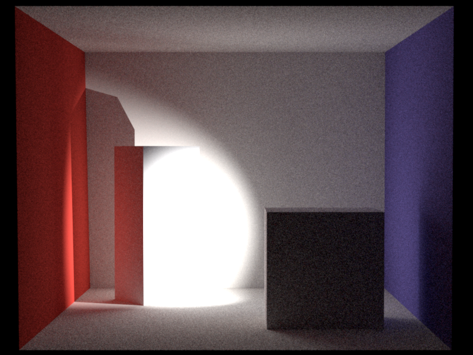
There is a reasonable difference in rendered images. In my implementation, after computing $t$, I apply a Hermite interpolation (SmoothStep) following the [PBR book](https://www.pbr-book.org/4ed/Utilities/Mathematical_Infrastructure#SmoothStep), which creates an "S-curve" falloff. My spotlight hence stays brighter for longer near the center (the "shoulder" of the S-curve) and fade out more gradually near the absolute edge (the "toe" of the S-curve) compared to Mitsuba's sharp linear drop, which applies applies a [pure linear ram](https://github.com/mitsuba-renderer/mitsuba3/blob/master/src/emitters/spot.cpp#L142). Also, my interpolation domain is cosine where Mitsuba is the angle itself. I believe that the visual differences make sense based on these two implementation differences.
## Directional Light
Directional Light is also known as distant light, which desccribes an emitter that deposits illumination from the same direction at every point in space. This feature is discussed in [chapter 12.3 of the PBR book](https://pbr-book.org/4ed/Light_Sources/Distant_Lights).
### Description
**Files created or modified**:
- `src/directionallight.cpp`
**Validation scenes**:
- `scenes/nori-beyond/directional_light/`
A new emitter type `DirectionalLight` is implemented in the file `directionallight.cpp`.
The radiance at a point $\mathbf{x}$ from direction $\boldsymbol{\omega}_\text{i}$ due to directional light with direction $\boldsymbol{\omega}_\ell$ is given by
$$
L_\text{i}(\mathbf{x}, \boldsymbol{\omega}_\text{i}) = L_\text{e}\delta(\boldsymbol{\omega}_\text{i} - \boldsymbol{\omega}_\ell)
$$
The physical reason that directional lights make sense is that for point lights, $L_\text{i} \propto \frac{1}{r^2}$ where $r$ is the distance from the point light. For directional lights, $r \to \infty$. However, the emitting area also grows as $r^2$. The two effects cancel.
#### `DirectionalLight::eval(...)`
Delta emitters have zero area so there is measure-zero probability of hitting them via BSDF sampling.
#### `DirectionalLight::sample(...)`
Given a shading point $\mathbf{x}$, we sample the incoming direction $\boldsymbol{\omega}_\text{i}$ deterministically since there is only one valid direction. We set:
- $\boldsymbol{\omega}_\text{i} = -\boldsymbol{\omega}_\ell$ (toward the light source)
- $\mathbf{p} = \mathbf{x} + \boldsymbol{\omega}_\text{i} \cdot 2r_\text{scene}$ (a fictitious point far away)
- $\text{pdf} = 1$ (delta distribution, handled specially)
- Shadow ray from $\mathbf{x}$ toward $\boldsymbol{\omega}_\text{i}$ with infinite extent
The returned radiance is simply $L_\text{e} = \texttt{scale} \times \texttt{spectrum}$. Unlike area lights, there is no $1/r^2$ falloff since the light is infinitely distant.
#### `DirectionalLight::pdf(...)`
Delta lights have zero measure, thus PDF = 0. This is required for MIS to correctly handle the delta distribution—the MIS weight computation uses this PDF, and returning 0 ensures that BSDF-sampled paths that happen to align with the light direction don't incorrectly contribute.
#### `DirectionalLight::samplePhoton(...)`
For photon mapping, we need to emit photons that cover the entire scene uniformly from the light direction. Following [PBR book 12.5](https://pbr-book.org/4ed/Light_Sources/Light_Emission#PhotonEmissionMethods), we:
1. Sample a point on a disk of radius $r_\text{scene}$ perpendicular to the light direction $\boldsymbol{\omega}_\ell$
2. Position this disk behind the scene (offset by $r_\text{scene}$ along $-\boldsymbol{\omega}_\ell$)
3. Emit a ray from this point in direction $\boldsymbol{\omega}_\ell$
The disk sampling uses an orthonormal frame built from $\boldsymbol{\omega}_\ell$:
$$
\mathbf{o} = r_\text{scene}(u \cdot \mathbf{s} + v \cdot \mathbf{t}) - r_\text{scene} \cdot \boldsymbol{\omega}_\ell
$$
where $(u, v)$ is a uniform disk sample and $(\mathbf{s}, \mathbf{t}, \boldsymbol{\omega}_\ell)$ form an orthonormal basis.
The photon power is $L_\text{e} \times \pi r_\text{scene}^2$ (radiance times the disk area), which accounts for the uniform PDF of $1/(\pi r_\text{scene}^2)$ over the sampling disk.
### Validation
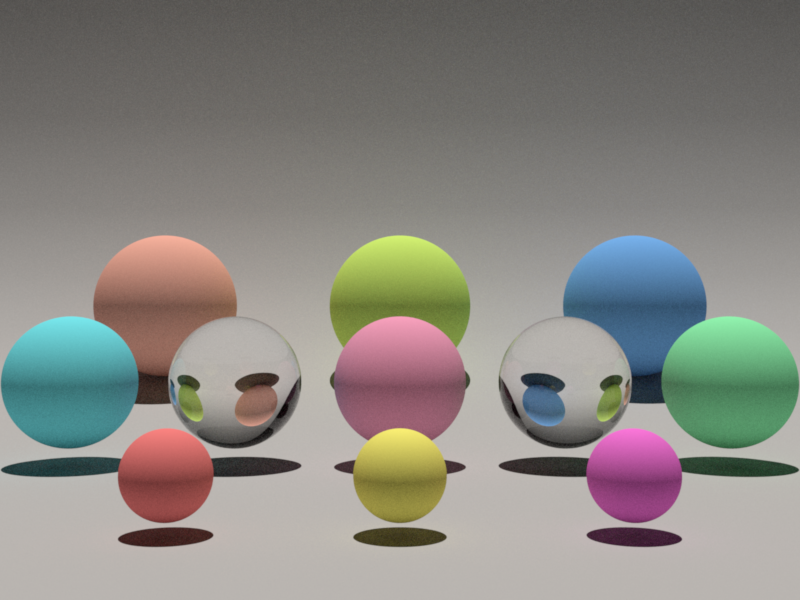
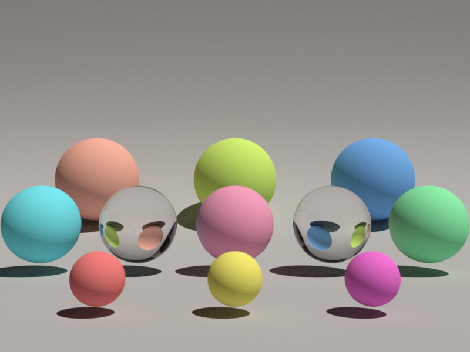
## Environment Map Emitter
Environment Map Emitter simulates global illumination by using an environment map as a light source.
### Description
**Files created or modified**:
**Validation scenes**:
### Validation
# Textures
## Images as Texture
### Description
**Files created or modified**:
- `include/nori/lodepng.h`: downloaded from [lodepng](https://github.com/lvandeve/lodepng/tree/master)
- `src/lodepng.cpp`: downloaded from [lodepng](https://github.com/lvandeve/lodepng/tree/master)
- `src/imagetexture.cpp`
**Validation scenes**:
- `scenes/nori-beyond/image_texture/mesh-image-texture.xml`
- `scenes/nori-beyond/image_texture/mesh-image-texture-mitsuba.xml`
This feature enables the use of PNG images as textures to replace constant albedo colors on objects in the scene. A new texture type `ImageTexture` is implemented in `imagetexture.cpp`. The texture supports tiling and scaling.
The standard texture mapping pipeline includes scene definition -> texture loading at startup -> ray intersection -> UV coordinate interpolation -> texture lookup -> colour / material evaluation. To breakdown the implementation, the following details the pipeline:
1. Image texture loading at startup: An image loader would be needed to parse the image file in order to handle decompressing data, convert to RGB format, etc.
2. Ray intersection: When a ray hits a mesh triangle, I would need to get the barycentric coordinates of the hit point within the triangle `bary_coordinates`.
3. UV coordinate interpolation: The 3D mesh has UV coordinates stored per vertex, normalized to $[0, 1]$. For example, `Point2f uv0 = m_UV.col(v0)` is the UV coordinates at vertex 0. Using `bary_coordinates`, I can interpolate the UV coordinates: `its.uv = bary_coordinates.x() * uv0 + bary_coordinates.y() * uv1 + bary_coordinates.y() * uv2`. This part and the previous two parts are already handled in nori.
4. Texture lookup: I need to loopk up the colour in the loaded texture data. This consists of first converting the UV coordinates ($[0, 1]$) to pixel coordinates ([width, height]), then looking up the image loader data.
5. Colour/Material evaluation: This is implemented in the BSDF `eval` methods (e.g. `Diffuse`'s `eval` method calls `m_albedo->eval(bRec.uv)`). Finally, the BSDF value is evaluated with `bsdf->eval(bRec)`.
For the image loader, I searched for commonly used ones and were deciding between [lodepng](https://github.com/lvandeve/lodepng) and [stb_image](https://github.com/nothings/stb). I decided to use lodepng since I only need PNG support and that it has separate compilation and has automatic memory management.
For the PNG image loading, I first construct the flattened 1D array `m_data` in which each entry is a Color3f, for memory efficiency.
#### `ImageTexture::eval(...)`
Given the UV coordinates on the 3D surface, this method should find the corresponding pixel in the image texture, and return its RGB colour.
First, apply the tiling and scaling by computing the fractional part of the scaled UV coordinates
```
float img_u = std::fmod(uv.x() * m_scale.x(), 1.0f);
float img_v = std::fmod(uv.y() * m_scale.y(), 1.0f);
```
For example, if `uv = (0.75, 0.75)` and `m_scale = (2.0, 2.0)`, then after scaling, I get `(1.5, 1.5)` which is beyond $[0, 1]$ and I are in the second repetition, so I subtract by $\lfloor 1.5 \rfloor = 1$ to get $(0.5, 0.5)$, which means that at surface point $(0.75, 0.75)$ I sample texture from $(0.5, 0.5)$, because the texture is repeated twice.
Next, convert the UV coordinates to pixel coordinates by scaling `img_u` by `m_width` and `img_v` by `m_height` and trancating to integer pixel index. For the V coordinate, I need to flip the axis because in the image storage, row 0 is at the top of the image but V = 0 is at the bottom of the texture. Then I clamp the bounds to prevent the pixel coordinates being negative or going beyond the last column or row.
Finally, convert from 2D to 1D array index to look up the RGB value from `m_data` which I constructed.
### Validation
For the validation scenes, I reuse the scene `mesh-texture` from assignment 1
## Normal mapping
Normal mapping replaces the shading normal with a normal sampled from a texture (RGB image). The texture stores perturbations of the normal direction. This feature is discussed in [chapter 10.5.3 of the PBR book](https://www.pbr-book.org/4ed/Textures_and_Materials/Material_Interface_and_Implementations#NormalMapping).
### Description
**Files created or modified**:
- `src/normalmap.cpp`
- `include/nori/bsdf.h`
- `src/diffuse.cpp`
- `src/mesh.cpp`
**Validation scenes**:
- `scenes/nori-beyond/normal_mapping/mesh-normal-map.xml`
- `scenes/nori-beyond/normal_mapping/mesh-no-normal-map.xml`
- `scenes/nori-beyond/normal_mapping/mesh-normal-map-mitsuba.xml`
- `scenes/nori-beyond/normal_mapping/mesh-no-normal-map-mitsuba.xml`
The current rendering pipeline follows ray generation -> ray-scene interaction -> `mesh.cpp::setHitInformation` which fills in `its` -> integrators to compute radiance. The `NormalMap` texture would return the `Normal3f` at a given UV coordinate in the 3D surface. We need to modify `mesh.cpp::setHitInformation` so that `its.shFrame` is the perturbed frame according to the normal map.
#### `src/normalmap.cpp`
A new texture `NormalMap` is implemented in `normalmap.cpp`. Normal maps are stored in the tangent space (aligned with per-vertex tangent, bitangent, normal) using `(R, G, B) = (nx, ny, nz)` with each component in $[0, 1]$. Since real normals are in $[-1, 1]$, the PBR book decodes them by `x = 2 * r - 1`, and correspondingly for `y` and `z`. After that, we store the `Normal3f(x, y, z)` into `m_data`. In `include/nori/frame.h`, the `Frame` class defines `s` and `t` as tangent vectors and `n` as the normal and the key transformation method is:
```
Vector3f toWorld(const Vector3f &v) const {
return s * v.x() + t * v.y() + n * v.z();
}
```
which is a standard right-handed coordinate frame with no special tangent convention defined. So for normal maps with OpenGL format, we pass through `(x, y, z)` which will be mapped to `(s, t, n)` and for normal maps with DirectX format, we pass `(x, -y, z)` since DirectX conventions have Y pointing down. Other than this detail and that the final returned `Normal3f` should be normalized, the implementation of `eval` is the same as as that in `ImageTexture`.
#### `include/nori/bsdf.h`
We added the method `getNormalMap()` which returns `true` if the BSDF has a normal map. We need to add this method because image textures are stored in `m_albedo` within the BSDF (`diffuse.cpp::addChild()`), and then the `sample` method uses it. However, since we need to modify `its.shFrame` inside `mesh.cpp::setHitInformation`, it must access `m_normalMap`.
#### `src/diffuse.cpp`
To use the normal map, we need at least one BSDF that stores it. We use the diffuse BSDF. For each instance where `m_albedo` appears, we also add `m_normalMap`. This includes the constructor, destructor, `addChild()` and `toString()`. In addition, we also implement the `getNormalMap()` override to return the normal map so the mesh can retrieve it.
#### `Mesh::setHitInformation()`
After interpolating base normal from mesh, we need to query BSDF for the normal map using `getNormalMap()`. If normal map exists, we evaluate the normal map at `its.uv` to get the tangent-space normal. Then we compute the tangent frame from UV gradients and transform the normal to world space. Then we update `its.shFrame` with the perturbed normal. In [detail](https://www.pbr-book.org/4ed/Textures_and_Materials/Material_Interface_and_Implementations#NormalMapping), we first read the normal map $\mathbf{n}_s = (n_x, n_y, n_z)$ using `Normal3f mappedNormal = normalMap->eval(its.uv)`, where `eval` was implemented in `normalmap.cpp`.
Let the triangle vertex positions be $\mathbf{p}_0, \mathbf{p}_1, \mathbf{p}_2 \in \mathbb{R}^3$ and the triangle UVs be $\mathbf{u}_0, \mathbf{u}_1, \mathbf{u}_2 \in \mathbb{R}^2$. We define $\Delta \mathbf{p}_1 = \mathbf{p}_1 - \mathbf{p}_0$, $\Delta \mathbf{p}_2 = \mathbf{p}_2 - \mathbf{p}_0$, $\Delta \mathbf{u}_1 = \mathbf{u}_1 - \mathbf{u}_0$, $\Delta \mathbf{u}_2 = \mathbf{u}_2 - \mathbf{u}_0$. We want $\mathbf{p}_u, \mathbf{p}_v$ solving the $2 \times 2$ linear system coming from
$$
\begin{align*}
\Delta \mathbf{p}_1 &= \mathbf{p}_u \Delta \mathbf{u}_{1_u} + \mathbf{p}_v \Delta \mathbf{u}_{1_v} \\
\Delta \mathbf{p}_2 &= \mathbf{p}_u \Delta \mathbf{u}_{2_u} + \mathbf{p}_v \Delta \mathbf{u}_{2_v}
\end{align*}
$$
Equivalently,
$$
\begin{bmatrix}\Delta \mathbf{p}_1 & \Delta \mathbf{p}_2\end{bmatrix} = \begin{bmatrix}\mathbf{p}_u & \mathbf{p}_v\end{bmatrix}\begin{bmatrix}\Delta \mathbf{u}_{1_u} & \Delta \mathbf{u}_{2_u} \\ \Delta \mathbf{u}_{1_v} & \Delta \mathbf{u}_{2_v}\end{bmatrix}
$$
Solving for $\begin{bmatrix}\mathbf{p}_u & \mathbf{p}_v\end{bmatrix}$ by inverting the $2 \times 2$ UV matrix, the determinant is
$$
\Delta = \Delta \mathbf{u}_{1_u} \Delta \mathbf{u}_{2_v} - \Delta \mathbf{u}_{1_v} \Delta \mathbf{u}_{2_u}
$$
If $\Delta \neq 0$, the inverse yields the closed form
$$
\mathbf{p}_u = \frac{\mathbf{u}_{2_v}\mathbf{p}_1 - \mathbf{u}_{1_v}\mathbf{p}_2}{\Delta}, \quad \mathbf{p}_v = \frac{-\mathbf{u}_{2_u}\mathbf{p}_1 - \mathbf{u}_{1_u}\mathbf{p}_2}{\Delta}
$$
If $|\Delta| \leq \varepsilon$, the UV mapping is degenerate (no well-defined mapping), so we fall back. Next we Gram-Schmidt the tangent. We set `Vector3f n = its.shFrame.n;`, then to compute $t$, we project $\mathbf{p}_u$ on to normal $\mathbf{n}$ by $\text{proj}_\mathbf{n}(\mathbf{p}_u) = (\mathbf{n} \cdot \mathbf{p}_u)\mathbf{n}$. Then remove the normal component
$$
\tilde{\mathbf{t}} = \mathbf{p}_u - \text{proj}_\mathbf{n}(\mathbf{p}_u) = \mathbf{p}_u - (\mathbf{n} \cdot \mathbf{p}_u)\mathbf{n}
$$
and normalize it. Then compute bitangent as cross product: $\mathbf{b} = \mathbf{n} \times \mathbf{t}$. Then we do a linear change-of-basis from tangent-space coordinates $\mathbf{n}_s$ to world coordinates using the TBN matrix $\begin{bmatrix}\mathbf{t} & \mathbf{b} & \mathbf{n}\end{bmatrix}$:
$$
\mathbf{n}_\text{world} = n_x \mathbf{t} + n_y \mathbf{b} + n_z \mathbf{n}
$$
and normalize it. Then, we replace the shading normal used for shading with the perturbed normal $\mathbf{n}_\text{world}$. The new shading frame is constructed from $\mathbf{n}_\text{world}$.
For the fallback branch (degenerate UV) or if there is no UV, we cannot reliably compute $\mathbf{p}_u, \mathbf{p}_v$ from UV, so we use the preexisting tangent frame.
### Validation
The materials used for validation are downloaded from [ambientCG](https://ambientcg.com):
Bark Color Map
Bark Normal Map
Ground Color Map
Ground Normal Map
**Comparison: Bark and Ground Material With and Without Normal Maps**
# Light Transport Algorithms
## Final Gather for Photon Mapping
Final Gather for Photon Mapping refines global illumination by gathering photon data to compute indirect light.
In standard photon mapping, we estimate irradiance by averaging photons within a radius $r$. This is inherently biased because we are averaging over an area, not evaluating at a point. Sharp features get smeared. The larger the radius, the more blur, and the smaller the radius, the more noise. Final gather hides the bias behind an integration.
### Description
**Files created or modified**:
- `src/photonmapper.cpp`
**Validation scenes**:
- `scenes/nori-beyond/final_gather/cbox_0.xml`
- `scenes/nori-beyond/final_gather/cbox_64_10M.xml`
The basic photon mapping logic has two phases: preprocessing and rendering. The preprocessing phase follows the steps:
1. Emit photons from light sources until the desired number of photons stored in map `num_photons` reaches the target number of photons `m_photonCount`. Randomly select an emitter, sample a photon ray and power using `samplePhoton()`.
2. Trace photons through the scene :
- When a photon hits a diffuse surface, store it in the photon map (position, incident direction, power)
- Use Russian roulette for path termination
- Sample BSDF to bounce the photon, attenuating its power by $f_\text{r}(\mathbf{x}, \boldsymbol{\omega}_\text{i}, \boldsymbol{\omega}_\text{r}) \cos \theta_\text{i} / p(\boldsymbol{\omega}_i)$
- Account for radiance scaling when passing through dielectric surfaces with $\eta^2$ scaling
3. Build KD-tree for efficient photon lookups
The rendering phase follows the steps:
1. Trace camera rays through the scene
2. If the ray hits an emitter, add emitted radiance $L_\text{e}$.
3. At the first diffuse surface hit,
- Search photon map within `m_photonRadius`
- For each found photon $i$, evaluate BSDF (with the current ray direction $\boldsymbol{\omega}_\text{o}$ and the photon direction $\boldsymbol{\omega}_\text{i}$) and accumulate $L_\text{r}$ with $f_\text{r}(\mathbf{x}, \boldsymbol{\omega}_\text{i}, \boldsymbol{\omega}_\text{o}) \Phi_i$.
- Get density estimation $L_\text{r} \leftarrow L_\text{r} / (\pi r^2 M)$ where $M$ is the number of emitted photons.
- Aggregate $L_\text{i}$ by $L_\text{r}$ multiplied by the current throughput
4. Use Russian roulette for path termination
5. At specular surfaces, continue tracing via BSDF sampling.
#### `PhotonMapper::Li()`
Instead of looking up photons at the point of query $\mathbf{x}$, we do one extra bounce. We sample `m_numGatherRays` gather rays from $\mathbf{x}$ with its BSDF. We trace each gather ray through the scene with max `maxSpecularBounces` specular bounces. At the first diffuse hit, we perform the photon lookup and density estimation. The radiance $\mathbf{x}$, $L_\text{r}(\mathbf{x}, \boldsymbol{\omega}_\text{o})$ from final gather is then given by
$$
L_\text{r}(\mathbf{x}, \boldsymbol{\omega}_\text{o}) = \frac{1}{\texttt{m_numGatherRays}}\sum_{k = 1}^\texttt{m_numGatherRays} f_\text{r}(\mathbf{x}, \boldsymbol{\omega}_{\text{i}, k}, \boldsymbol{\omega}_\text{o})L_\text{i}(r(\mathbf{x}, \boldsymbol{\omega}_{\text{i}, k}), -\boldsymbol{\omega}_{\text{i}, k})
$$
A caveat about final gather is that we need to explicitly compute direct lighting with a shadow ray test. Consider direct photon density estimation: Without final gather, photons from the light hits surfaces and get stored. A sphere blocks photons from reaching the floor behind it. Fewer photons are then stored in that shadowed region, causing it to be darker and creating shadows. With final gather, gather rays are shot from the shading point in all directions, where we look up photons. Even if the shading point is in shadow, the gather ray can reach lit surfaces, causing the shadow to disappear. Hence the radiance at $\mathbf{x}$, $L_\text{i}(\mathbf{x}, \boldsymbol{\omega}_\text{o})$ is given by $L_\text{i}(\mathbf{x}, \boldsymbol{\omega}_\text{o}) = L_\text{e} + qL_\text{r}(\mathbf{x}, \boldsymbol{\omega}_\text{o})$ where $q$ is the throughput.
The current code now takes in an argument `numGatherRays` as follows:
```
```
If `numGatherRays` is unspecified, it is automatically set to 0, and the behaviour is the same as original version of photon mapping.
### Validation
It can be observed that the caustic effect gets diluted or lost. This is because caustic photons (light paths like $LS+D$) are stored in the global photon map. Without final gather, we query photons directly at the shading point, and caustics are visible. With final gather, the gather rays sample the BSDF and do photon lookups at the endpoints of those rays. However, caustics are highly localized and the probability that a random gather ray lands exactly in a caustic region is very low, and thus most gather rays missthe caustic entirely. So the caustic effect gets diluted.
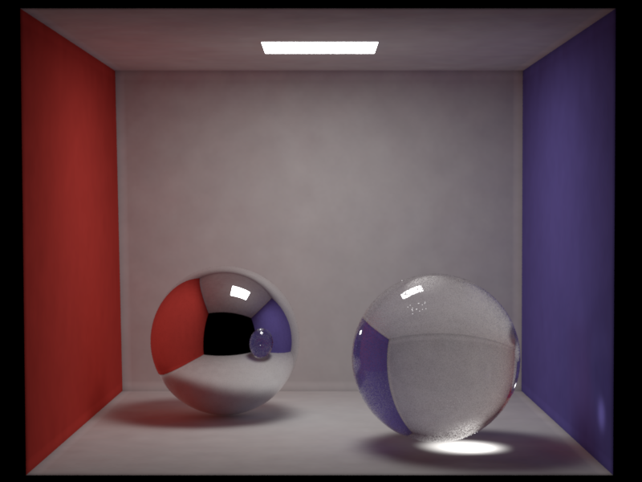
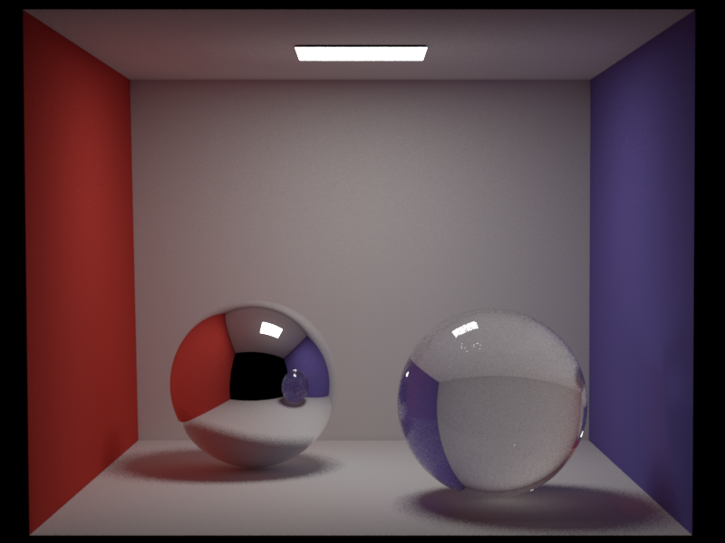
## Dedicated Caustics Photon Map
A dedicated caustics map separates photons into two categories: Global photon map and caustics photon map. The caustics photon map stores photons that passed through at least one specular surface before hitting a diffuse surface.
### Description
**Files created or modified**:
- `src/photonmapper.cpp`
**Validation scenes**:
- `scenes/nori-beyond/caustics_map/cbox_64_10M.xml`
New member variables `m_causticPhotonCount`, `m_causticRadius`, `m_emittedCausticPhotons` have been added. In general, typical photon radius in the caustics map is smaller than that in the global map, and fewer photons are needed.
#### `PhotonMapper::preprocess()`
The preprocessing phase now needs to build two photon maps. `photonCount` photons are to be stored in the global photon map and stored at diffuse surfaces. If caustics photon map is enabled, the photons are stored *only* if they did not just hit a specular surface one bounce ago. Otherwise if caustics photon map is disabled, they are stored at every diffuse hit. `causticPhotonCount` photons are to be stored in the caustics photon map. We track a flag `hasHitSpecular`, initialized as false, as the photon bounces in the scene. Once the photon has hit a specular surface, the flag is set to `true`. In the next diffuse hit, the photon is stored in the caustics map and we stop tracing this photon.
#### `PhotonMapper::Li()`
At a diffuse surface, we estimate the photon density from the caustics map *without* final gather and obtain $L_\text{caustic}$. We also estimate the photon density with the global photon map with or without final gather (depending on user specification) and obtain $L_\text{global}$. We then aggregate the two radiances.
The current code now takes in an argument `causticPhotonCount` and `causticRadius` as follows:
```
```
If `causticPhotonCount` or `causticRadius` are unspecified, they are automatically set to 0, and the behaviour is the same as original version of photon mapping.
### Validation
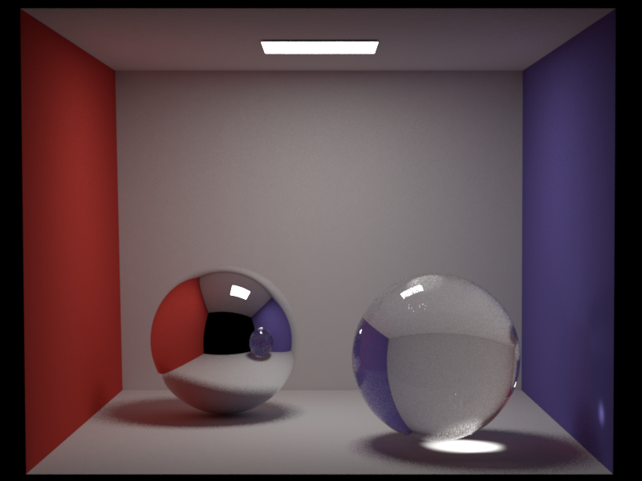
## Resampled Importance Sampling
Resampled Importance Sampling (RIS) focuses computation on areas of higher light contribution.
In the current path tracing with multiple importance sampling (MIS), we sample one light uniformly from the light set, and one BSDF direction, and combine the two with MIS weights. This works well, but uniform light selection is bad when many lights exist, and one light sample per bounce is often noisy. In RIS, we generate $M$ candidate lights, assign each a weight, and resample one candidate. When $M = 1$, RIS reduces to standard emitter sampling.
### Description
**Files created or modified**:
- `src/path_ris.cpp`
**Validation scenes**:
- `scenes/nori-beyond/path_ris/sponza.xml`
The general RIS framework from [Talbot et al.](https://diglib.eg.org/handle/10.2312/EGWR.EGSR05.139-146) estimates an integral $I = \int_\Omega f(x) \, d\mu(x)$ using two PDFs:
- Source PDF $p(x)$: easy to sample from (the proposal distribution)
- Target PDF $g(x)$: closer to $f(x)$, possibly unnormalized or difficult to sample directly
The RIS procedure is:
1. Draw $M$ candidate samples $X_1, \ldots, X_M \sim p(x)$
2. Compute resampling weights $w_j = \frac{g(X_j)}{p(X_j)}$
3. Resample one candidate $Y$ from $\{X_j\}$ with probability $P(Y = X_j) = \frac{w_j}{\sum_k w_k}$
4. The unbiased RIS estimator is:
$$
\hat{I}_\text{RIS} = \underbrace{\frac{f(Y)}{g(Y)}}_\text{evaluated at resampled $Y$} \cdot \frac{1}{M} \sum_{j=1}^M w_j
$$
When $M = 1$, RIS reduces to standard importance sampling with PDF $p$.
Our implementation uses a simplified parameterization where we set $g = f$ (the target equals the integrand). This is a valid special case of RIS.
For direct lighting at shading point $\mathbf{x}$, the integrand is:
$$
f(\mathbf{y}) = f_\text{r}(\mathbf{x}, \boldsymbol{\omega}_\text{i}, \boldsymbol{\omega}_\text{o}) \, L_\text{e}(\mathbf{y}, -\boldsymbol{\omega}_\text{i}) \, \cos\theta_\text{i} \, G(\mathbf{x}, \mathbf{y}) \, V(\mathbf{x}, \mathbf{y})
$$
where $\mathbf{y}$ is a point on a light source, $\boldsymbol{\omega}_\text{i} = \frac{\mathbf{y} - \mathbf{x}}{\|\mathbf{y} - \mathbf{x}\|}$, $G$ is the geometry term, and $V$ is visibility.
Our source (proposal) PDF is uniform light selection combined with area sampling on each light:
$$
p(\mathbf{y}) = \frac{1}{N_\text{lights}} \cdot p_A(\mathbf{y} \mid l)
$$
with $p_A(\mathbf{y} \mid l) = \frac{\cos\theta_\text{o}}{\|\mathbf{x} - \mathbf{y}\|^2} p_\Omega(\boldsymbol{\omega}_\text{i})$.
#### `PathRISIntegrator::Li()`
At shading point $\mathbf{x}$:
1. Sample $M$ candidates. For $i = 1, \ldots, M$, sample light $l_i$ uniformly such that $p(l_i) = \frac{1}{N_\text{lights}}$, and sample point $\mathbf{y}^i$ on light $l_i$: $\mathbf{y}^i \sim p_A(\mathbf{y} \mid l_i)$
2. For each candidate, compute the contribution (ignoring visibility for now):
$$
c_i = \frac{f_\text{r} \, L_\text{e} \, \cos\theta_\text{i}}{p_\Omega(\boldsymbol{\omega}_\text{i})}
$$
Note that $c_i$ is the integrand $f$ divided by the solid angle PDF only (not the full proposal PDF). The $\frac{1}{N_\text{lights}}$ factor is handled separately. Also compute the scalar resampling weight $w_i = \text{luminance}(c_i)$.
3. Select candidate $k$ with probability $P(k) = \frac{w_k}{\sum_{j=1}^M w_j}$
4. If the selected candidate passes the visibility test, compute the final estimate. When $g = f$ (our case), $\frac{f(Y)}{g(Y)} = 1$, so the estimator simplifies to $\frac{1}{M}\sum_j w_j$. However, computing the full sum requires evaluating all $M$ candidates. In practice, we select candidate $k$ with probability $P(k) = \frac{w_k}{\sum w_j}$, then output $\frac{1}{P(k)} \cdot \frac{1}{M} \cdot \frac{f(X_k)}{g(X_k)}$. By importance sampling, this has the same expectation as the full sum but only requires evaluating one candidate (e.g., one visibility test instead of $M$). Using the this single-sample RIS variant with $g = f$, the estimator is:
$$
\frac{1}{P(k)} \cdot \frac{1}{M} \cdot \underbrace{\frac{f(X_k)}{g(X_k)}}_{= 1 \text{ since } g = f} = \frac{\sum w_j}{w_k} \cdot \frac{1}{M}
$$
But this assumes $w_j = \frac{f(X_j)}{p(X_j)}$ with the full proposal PDF $p = \frac{p_\Omega}{N_\text{lights}}$. In our implementation, we instead use $w_j = \text{luminance}(c_j)$ where $c_j = \frac{f_j}{p_\Omega}$ (missing the $N_\text{lights}$ factor). To correct for this, we multiply by $c_k \cdot N_\text{lights}$:
$$
\hat{L}_\text{RIS} = \frac{1}{M} \cdot \frac{\sum_{j=1}^M w_j}{w_k} \cdot \underbrace{c_k \cdot N_\text{lights}}_{= f_k / p(X_k)}
$$
The term $c_k \cdot N_\text{lights} = \frac{f_k}{p_\Omega} \cdot N_\text{lights} = \frac{f_k}{p_\Omega / N_\text{lights}} = \frac{f_k}{p(X_k)}$ gives us the correct importance sampling ratio for the full proposal PDF.
When $M = 1$, $\frac{\sum w_j}{w_k} = 1$, recovering standard emitter sampling: $\hat{L} = c_1 \cdot N_\text{lights} = \frac{f}{p}$.
For the emitter sampling branch (RIS), we apply a MIS weight:
$$
w_\text{em} = \frac{p_\text{em}}{p_\text{em} + p_\text{mat}}
$$
where $p_\text{em} = \frac{p_\Omega(\boldsymbol{\omega}_\text{i})}{N_\text{lights}}$ is the full emitter sampling PDF (solid angle PDF divided by number of lights) and $p_\text{mat}$ is the BSDF sampling PDF. The final RIS contribution becomes:
$$
\hat{L}_\text{RIS} = w_\text{em} \cdot \frac{1}{M} \cdot \frac{\sum w_j}{w_k} \cdot c_k \cdot N_\text{lights}
$$
For the BSDF sampling branch, when a BSDF-sampled direction hits an emitter, we apply the complementary MIS weight:
$$
w_\text{mat} = \frac{p_\text{mat}}{p_\text{em} + p_\text{mat}}
$$
and add:
$$
\hat{L}_\text{BSDF} = w_\text{mat} \cdot \frac{f_\text{r} \cos\theta}{p_\text{mat}} \cdot L_\text{e}
$$
For delta BSDFs (mirrors, glass), $p_\text{mat}$ is a Dirac delta and emitter sampling cannot find specular paths, so we use $w_\text{mat} = 1$ for BSDF-sampled paths through specular surfaces.
### Validation
This Sponza scene features multiple area lights distributed throughout the space, creating complex lighting conditions where uniform light selection becomes inefficient. Many shading points receive significant contribution from only a subset of the lights (e.g., nearby lights or those with unobstructed paths), while distant or occluded lights contribute little.
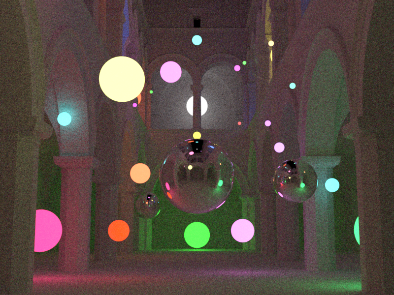
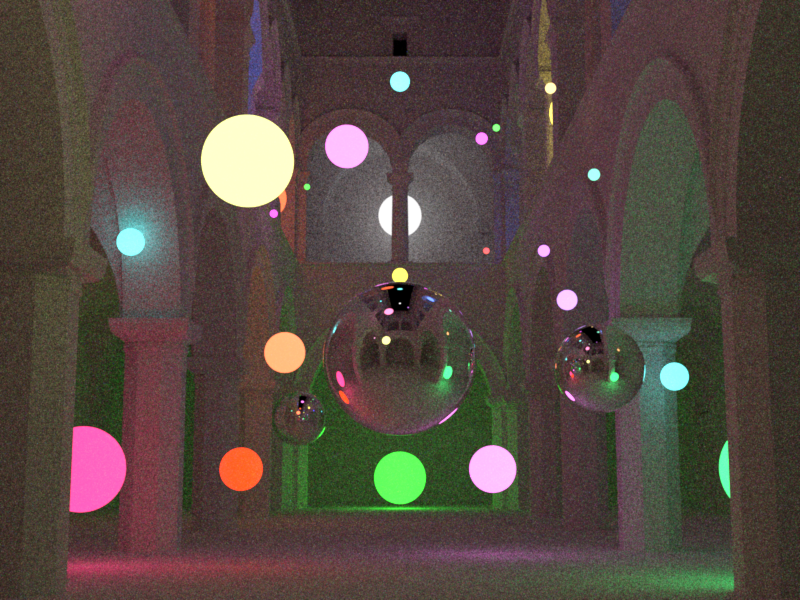
RIS excels in this scenario by resampling candidates based on their actual contribution (BSDF $\times$ emission $\times$ geometry), effectively concentrating samples on the lights that matter most for each shading point. This leads to lower variance compared to MIS with uniform light selection at the same sample count.
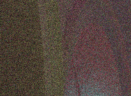
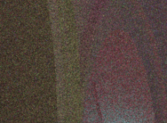
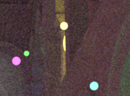
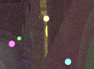
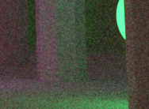
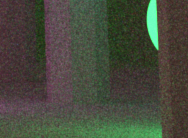
# Participating Media
## Phase Functions
The phase function $f_\text{p}(\mathbf{x}, \boldsymbol{\omega}_\text{i}, \boldsymbol{\omega})$ describes the angular distribution of light as it is scattered at a point within a medium. It is the volumetric analog of the BRDF for surfaces. Unlike a BRDF, which is normalized by a cosine factor and can integrate to values less than 1 (due to absorption), a phase function represents a pure probability density function (PDF) over the sphere of directions. Therefore, it must integrate to unity:
$$
\int_{S^2} f_\text{p}(\mathbf{x}, \boldsymbol{\omega}_\text{i}, \boldsymbol{\omega}) \mathrm{d} \boldsymbol{\omega}_\text{i} = 1
$$
### Description
The phase functions implemented are the isotropic phase function and the henyey-greenstein phase function.
In isotropic scattering, light is scattered equally in all directions. This is the volumetric equivalent of a perfectly diffuse Lambertian surface. Since there are $4\pi$ steradians in a unit sphere,
$$
f_\text{p}(\boldsymbol{\omega}_\text{i}, \boldsymbol{\omega}_\text{o}) = \frac{1}{4\pi}
$$
In many real-world media (like clouds or smoke), scattering is highly anisotropic, meaning it favors certain directions. Henyey-Greenstein is a popular empirical model used to simulate this behavior:
$$
f_{\text{p}, \text{HG}}(\theta) = \frac{1}{4\pi} \frac{1 - g^2}{(1 + g^2 - 2g \cos \theta)^{3/2}}
$$
where $\theta$ is the angle between the incoming and outgoing directions. The parameter $g$ (the asymmetry parameter or mean cosine) defines the "shape" of the scattering:
- $g > 0$: Forward scattering (light continues mostly in the same direction).
- $g < 0$: Backscattering (light is reflected back toward the source).
- $g = 0$: Isotropic scattering (mathematically equivalent to the isotropic model).
The value of $g$ is defined as the average cosine of the scattering angle:
$$
g = \int_{S^2} f_\text{p}(\mathbf{x}, \boldsymbol{\omega}_\text{i}, \boldsymbol{\omega}) \cos \theta \, \mathrm{d} \boldsymbol{\omega}_\text{i}
$$
where $\cos \theta = -\boldsymbol{\omega} \cdot \boldsymbol{\omega}_\text{i}$. For example, if $g=0.5$, the "average" photon is deflected only $60^\circ$ ($\cos 60^\circ = 0.5$) from its original path.
**Files created or modified**:
- `include/nori/phasefunction.h`
- `src/isotropic.cpp`
- `src/henyey_greenstein.cpp`
**Validation scenes**:
#### `include/nori/phasefunction.h`
This file mirrors the BSDF interface for consistency. It includes a `PhaseFunctionQueryRecord`, similar to the `BSDFQueryRecord`, and supports two constructors of a `PhaseFunctionQueryRecord` -- one that takes in the incident direction $\boldsymbol{\omega}_\text{i}$ for sampling the outgoing direction $\boldsymbol{\omega}_\text{o}$, and one that takes in both $\boldsymbol{\omega}_\text{i}$ and $\boldsymbol{\omega}_\text{o}$ for evaluation.
The `PhaseFunction` object is the superclass of all phase functions and has the methods `sample` and `eval`. Unlike `BSDF` which also has the `pdf` method, phase functions are PDFs themselves, hence `eval` will return the phase function value (i.e. the PDF). The `sample` method in `PhaseFunction` also returns the phase function value for convenience (instead of 1.0, which would be case in the `BSDF` implementation that returns `eval() / pdf()`).
#### `Isotropic::sample(...)`
Given a sample $\boldsymbol{\xi} \in [0, 1]^2$, we sample a direction uniformly on a sphere with `Warp::squareToUniformSphere` and assign this direction to `pRec.wo`. The method returns the phase function value is $1 / (4\pi)$.
#### `Isotropic::eval(...)`
The phase function value is simply $1 / (4\pi)$ for any given pairs of $\boldsymbol{\omega}_\text{i}$ and $\boldsymbol{\omega}_\text{o}$.
#### `HenyeyGreensteinPhaseFunction::sample(...)`
The azimuthal angle is simply $\phi = 2\pi \xi_2$ since Henyey-Greenstein does not depend on it. For the polar angle, we need to find $\cos\theta$ by inverting the CDF. The marginal PDF for $\cos\theta$ is obtained by integrating over $\phi$:
$$
p(\cos\theta) = \frac{1 - g^2}{2(1 + g^2 - 2g\cos\theta)^{3/2}}.
$$
The CDF is obtained by integrating from $-1$ to $\cos\theta$. Let $u = 1 + g^2 - 2g\mu$, so $\mathrm{d}u = -2g \, \mathrm{d}\mu$:
$$
\begin{align*}
P(\cos\theta) &= \int_{-1}^{\cos\theta} \frac{1 - g^2}{2(1 + g^2 - 2g\mu)^{3/2}} \, \mathrm{d}\mu \\
&= \frac{1 - g^2}{2} \int_{(1+g)^2}^{1 + g^2 - 2g\cos\theta} u^{-3/2} \cdot \frac{\mathrm{d}u}{-2g} \\
&= \frac{1 - g^2}{-4g} \left[ -2u^{-1/2} \right]_{(1+g)^2}^{1 + g^2 - 2g\cos\theta} \\
&= \frac{1 - g^2}{2g} \left( \frac{1}{\sqrt{1 + g^2 - 2g\cos\theta}} - \frac{1}{1+g} \right).
\end{align*}
$$
Setting $P(\cos\theta) = \xi_1$ and solving for $\cos\theta$:
$$
\begin{align*}
\xi_1 &= \frac{1 - g^2}{2g} \left( \frac{1}{\sqrt{1 + g^2 - 2g\cos\theta}} - \frac{1}{1+g} \right) \\
\frac{2g\xi_1}{1 - g^2} + \frac{1}{1+g} &= \frac{1}{\sqrt{1 + g^2 - 2g\cos\theta}} \\
\frac{2g\xi_1 + (1-g)}{1 - g^2} &= \frac{1}{\sqrt{1 + g^2 - 2g\cos\theta}} \\
\frac{1 - g + 2g\xi_1}{(1-g)(1+g)} &= \frac{1}{\sqrt{1 + g^2 - 2g\cos\theta}} \\
\sqrt{1 + g^2 - 2g\cos\theta} &= \frac{(1-g)(1+g)}{1 - g + 2g\xi_1} = \frac{1 - g^2}{1 + g - 2g(1 - \xi_1)}.
\end{align*}
$$
Squaring both sides and solving for $\cos\theta$:
$$
\cos\theta = \frac{1}{2g}\left(1 + g^2 - \left(\frac{1 - g^2}{1 + g - 2g\xi_1}\right)^2\right).
$$
For the special case $g \approx 0$ (isotropic), we use uniform sphere sampling: $\cos\theta = 1 - 2\xi_1$.
Once $\cos\theta$ and $\phi$ are computed, we build a coordinate frame around the forward scattering direction $-\boldsymbol{\omega}_\text{i}$ and convert from spherical to Cartesian coordinates to obtain $\boldsymbol{\omega}_\text{o}$.
#### `HenyeyGreensteinPhaseFunction::eval(...)`
The method simply computes $\cos \theta$ for the given pair of $\boldsymbol{\omega}_\text{i}$ and $\boldsymbol{\omega}_\text{o}$, and returns
$$
f_{\text{p}, \text{HG}}(\theta) = \frac{1}{4\pi} \frac{1 - g^2}{(1 + g^2 - 2g \cos \theta)^{3/2}}.
$$
### Validation
## Transmittance in Homogeneous Media
This feature enables coloured dielectric materials or liquid using Beer's law transmittance for homogeneous participating media.
### Description
By Beer's law, in a homogeneous participating media (where the absorption coefficient $\boldsymbol{\sigma}_\text{a}$ is constant), the transmittance of light is given by
$$
T = \exp\{-\boldsymbol{\sigma}_\text{a} t\}
$$
where $t$ is the distance travelled.
**Files created or modified**:
- `include/nori/bsdf.h`
- `src/null.cpp`
- `src/dielectric.cpp`
- `src/path_mis.cpp`
- `src/path_ris.cpp`
- `src/photonmapper.cpp`
**Validation scenes**:
#### `include/nori/bsdf.h`
The `BSDF` interface is extended to include absorption with default no absorption behaviour. New methods `getAbsorptionCoefficient` and `hasAbsorption` are added.
#### `src/null.cpp`
This is a null/transparent BSDF that lets rays pass through without any scattering or reflection. This is defined to bound fog volumes without any refractive distortion. It overrides the `hasAbsorption` and `getAbsorptionCoefficient` methods to return `true`. The null BSDF has discrete measure and returns zero for the `eval` and `pdf` methods. In the `sample` method, it sets $\boldsymbol{\omega}_\text{i}$ to $-\boldsymbol{\omega}_\text{o}$ (since there is no change in ray direction) and $\eta$ to 1 (since there is no change in medium). It can be used in the scene like this:
```
```
#### `src/dielectric.cpp`
Homogeneous participating media is implemented for the dielectric BSDF. The dielectric material takes in a new `Color3f` member variable `m_sigmaA`, which stores the absorption coefficient $\boldsymbol{\sigma}_\text{a}$ per RGB channel. The methods `getAbsorptionCoefficient` and `hasAbsorption` are overridden.
#### `PathMISIntegrator::Li(...)`
In the path tracer with MIS, we use the flag `insideMedium` to track the medium state and `mediumBSDF`, which can be a null pointer or a `BSDF`, to track the current medium.
We first check if the camera is inside a medium by checking `ray.d.dot(its.geoFrame.n)`. If the dot product is greater than zero, it means that the camera is inside a medium. We then get the absorption coefficient of the BSDF, compute the transmittance $T_r$ and multiply the throughput by the transmittance.
In both the emitter sampling and BSDF sampling branch (when the measure of the BSDF of the current intersection's mesh is discrete and the sampled direction is a refraction), we toggle the medium state and update `mediumBSDF`. If we are now inside a medium and the medium BSDF has non-zero absorption coefficients, then multiply the throughput by the transmittance.
### Validation